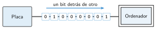

El puerto serie
🤔 Pienso5 min
Qué hago aquí: Piensa un momento y contesta con lo que ya sabes. No pasa nada si no lo sabes: es para empezar.
Tu robot siguelíneas se sale y no sabes por qué. ¿Qué te ayudaría a saber lo que mide el sensor?
📖 Leo y aprendo15 min
Qué hago aquí: Lee despacio, mira los dibujos y los ejemplos, y quédate con la idea clave del final.
Por el puerto serie los datos viajan de uno en uno, como personas en fila que pasan por una puerta .

El puerto serie sirve para ver los datos mientras el programa funciona. En MakeCode:
- El bloque serie escribir valor envía un dato al ordenador.
- El botón Mostrar datos del dispositivo lo enseña en pantalla y en una gráfica.
✏️ Hago25 min
Qué hago aquí: Haz las actividades en orden. Empieza siempre por las básicas.
Completa: en el puerto serie, los bits viajan .
Copia el programa del ejemplo. Abre Mostrar datos del dispositivo. Apunta la luz:
| Al aire | Tapada con la mano | Junto a la ventana |
|---|---|---|
Cambia el programa para enviar la temperatura. Calienta la placa con la mano. ¿Cuántos grados sube?
Haz que la placa escriba «botón A» cada vez que pulsas el botón A. ¿Funciona? Sí No
¿Para qué te sirve ver los datos cuando un programa no funciona bien?
✏️ Puedes responder escribiendo, con un dibujo o un esquema, o contándolo en voz alta.
🚀 Amplío (si quieres saber más)
Qué hago aquí: ¿Has terminado? Lee la curiosidad o elige el reto. Es voluntario.
Añade a tu siguelíneas una línea que envíe lo que ve cada ojo. Mueve el robot sobre la línea. Describe lo que ves.
✅ Compruebo5 min
Qué hago aquí: Contesta sin mirar la ficha y marca cómo lo llevas.